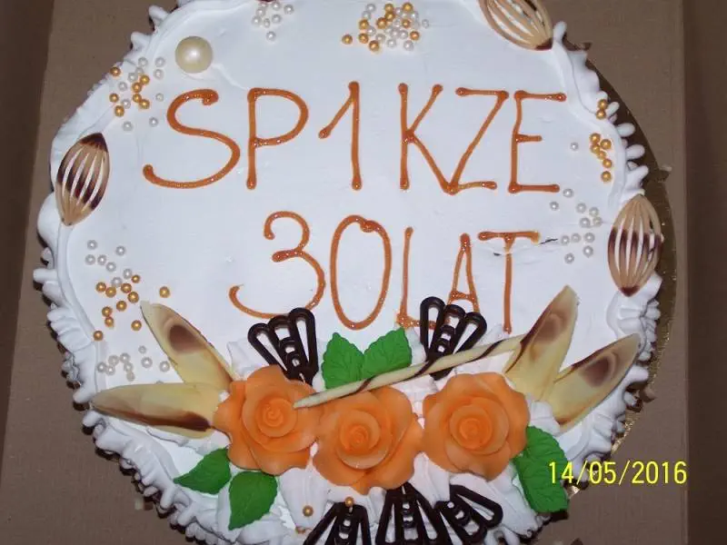
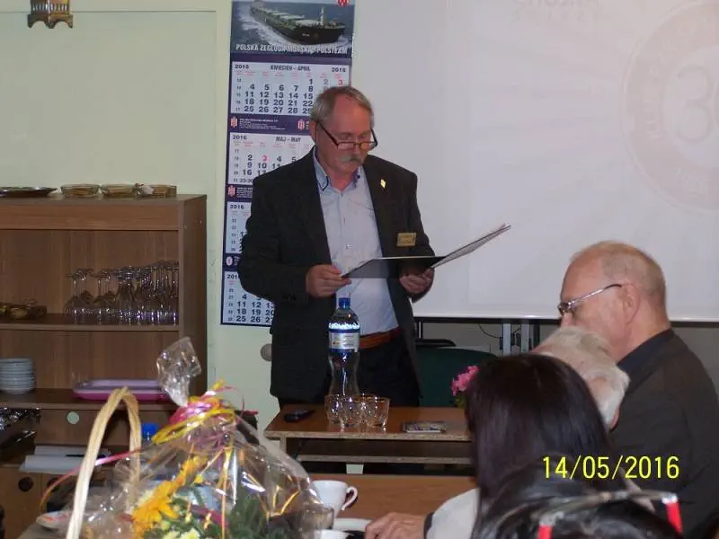
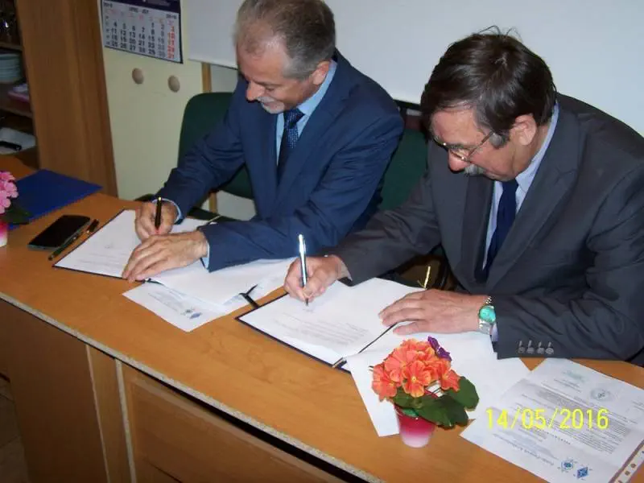

30 lat naszego klubu SP1KZE
...tak szybko mineło.

14 maja 2016 r. w Gminnym Centrum Organizacji Pozarządowych w Chojnie,
odbyło się wyjątkowe spotkanie, ponieważ dotyczyło XXX- lecia Klubu SP1KZE PZK. Od 30 lat w Chojnie
pracuje taki klub, który skupia w swoich szeregach osoby w różnym wieku ale z wielką pasją. Tą pasją
są łączności na falach eteru. Czym więcej, czym dalej tym lepiej, czyli to krótkofalowców dewiza.
Na zaproszenie członków klubu przybyli: Starosta Gryfiński Wojciech Konarski, Burmistrz Chojny Adam
Fedorowicz, Jerzy Ostrowski - Gminne Centrum Zarządzania Kryzysowego i Obrony Cywilnej. Zarząd
Główny PZK reprezentował Prezes Zachodniopomorskiego Oddziału PZK Janusz Tylkowski SP1TMN i
sekretarz ZOT PZK w Szczecinie Stefan Jaworski SP1JJY. Przedstawiciele klubu DL0PCK ze Schwedt na
czele z prezesem Rolfem Weberem oraz koledzy z klubów:
-SP1PNW z Dębna;
-SP1PMY z Myśliborza;
-SP1KRF z Barlinka;
-SP1KZO z Lipian.
Historię 30 lat klubu przedstawił prezes klubu SP1KZE PZK Paweł Szczygieł
SP1MWN.

W trakcie spotkania doszło do podpisania porozumienia w sprawie współpracy
przy podejmowaniu działań wspomagających przekazywanie informacji w sytuacjach klęsk żywiołowych i
innych podobnych zdarzeń zagrażających bezpieczeństwu powszechnemu pomiędzy Polskim Związkiem
Krótkofalowców reprezentowanym przez Prezesa Zachodniopomorskiego Oddziału PZK Janusza Tylkowskiego
SP1TMN a Burmistrzem Chojny Adamem Fedorowiczem. Na mocy tego porozumienia Klub SP1KZE PZK w Chojnie
deklaruje wolę współpracy w zakresie organizacji rezerwowej łączności radiowej na obszarze Gminy
Chojna w sytuacjach klęsk żywiołowych i innych podobnych zdarzeń zagrażających bezpieczeństwu
powszechnemu wymagających podjęcia działań wspomagających przekazywanie informacji w przypadkach
niesprawności komercyjnych systemów telekomunikacyjnych, takich jak telefonia stacjonarna,
komórkowa, Internet oraz innych. Jubileusze to także czas na podziękowania.

{kind=link}
Starosta Gryfiński W. Konarski oraz Burmistrz A. Fedorowicz zostali
wyróżnieni przez ZG PZK za wspieranie krótkofalarstwa. Kluby z Dębna, Myśliborza oraz Schwedt
otrzymały podziękowania w postaci pamiątkowych dyplomów z okazji 30 rocznicy powstania klubu SP1KZE.
Pamiątkowymi dyplomami zostali uhonorowani koledzy Jerzy Ziółkowski SP1IWC oraz Hans Juergen Hanh
DM2CNE. Spotkanie zakończyło się miłej i serdecznej atmosferze przy konsumpcji smacznego tortu.
Krótkofalowcy mają tylko jedno marzenie aby do ich wielkiej pasji dołączyli młodzi i zainteresowani
tym ciekawym hobby.
{kind=link}
{kind=link}